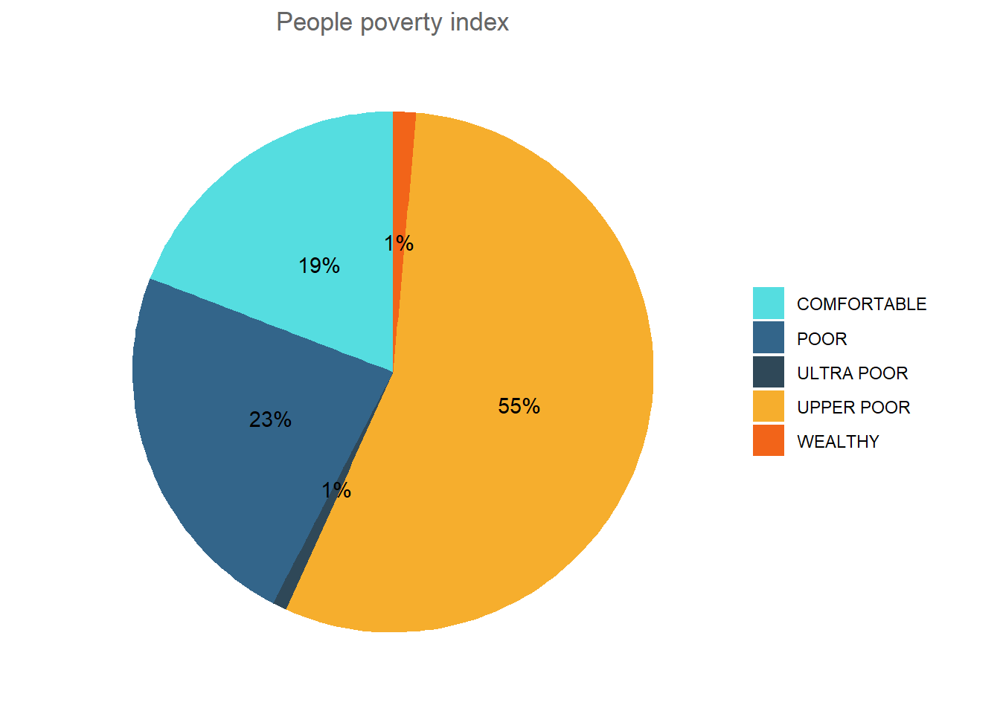

list.of.packages=c("tidyverse","readxl","nnet", "lubridate", "maps")
new.packages = list.of.packages[!(list.of.packages %in% installed.packages()[,"Package"])]
if(length(new.packages)) install.packages(new.packages,dependencies=T)
suppressMessages({
library(tidyverse)
library(readxl)
library(nnet)
library(lubridate)
library(maps)
})
# set theme
mytheme <- theme(plot.title=element_text(face="bold.italic",
size="14", color="aquamarine4"),
axis.title=element_text(face="bold.italic",
size=10, color="aquamarine4"),
axis.text=element_text(face="bold", size=9,
color="darkblue"),
panel.background=element_rect(fill="white",
color="darkblue"),
panel.grid.major.y=element_line(color="grey",
linetype=1),
panel.grid.minor.y=element_line(color="grey",
linetype=2),
panel.grid.minor.x=element_blank(),
legend.position="top")Case Study 2: Household Interview questions for Diaries research
Introduction: In financial diaries research, surveys are conducted biweekly to capture how individuals manage their finances over time. The challenge lies in handling and analyzing these periodic datasets while ensuring consistency across each survey wave. In this guide, we will walk through how to merge datasets, analyze key variables, and visualize insights using R.
Setting up and Installation
Links to the data here
diary1 <- read_xlsx("Biweekly1 Final.xlsx")
diary2 <- read_xlsx("Biweekly2 Final.xlsx")
diary3 <- read_xlsx("Biweekly3__Final_2016_18_11_10_12.0.xlsx")Merging Biweekly Datasets
The first task in any longitudinal analysis is to combine data from multiple periods into a single dataset. By merging three biweekly datasets, we can create a comprehensive view of our respondents’ data over time. Merging by Respondent ID ensures that all responses are aligned for each individual.
merged_df <- diary1 %>%
inner_join(diary2, by = c("Respondent_ID")) %>% #join using respondent_ID
mutate_at("Respondent_ID", as.character) %>% #Harmonize the data types by changing into character the joining column
full_join(diary3, by = c("Respondent_ID"))Creating a Frequency Table for Income Data
A simple yet effective way to understand income distribution is by creating a frequency table. This table will show how many respondents selected each option for income, providing an overview of income sources.
income_prep <- income_df %>%
gather(key = "question_name", value = "response") %>% #melting the data
mutate(response = replace_na(response, 99)) %>% #convert NA to 99
group_by(question_name) %>%
count(response, name = "frequency")
income_table <- income_prep %>%
ungroup() %>%
spread(response, frequency) %>%
arrange(`0`, `1`, `99`)
income_table# A tibble: 48 × 4
question_name `0` `1` `99`
<chr> <int> <int> <int>
1 A_4_6.y 375 121 68
2 A_4_6.x 379 117 68
3 A_4_15.x 383 113 68
4 A_4_15.y 387 109 68
5 A_4_15 400 136 28
6 A_4_2.x 410 86 68
7 A_4_2.y 419 77 68
8 A_4_6 422 114 28
9 A_4_9.y 427 69 68
10 A_4_9.x 437 59 68
# ℹ 38 more rowsVisualizing Income Data with a Bar Graph
Once the frequency table is generated, we can visualize the data. A bar graph makes it easy to compare the number of respondents across different income categories. The title for this graph is “Count of Respondents Having an Income Earning Activity,” offering clear insight into income distribution.
#preparing the data for plot
prep_income <- income_prep %>%
mutate_at(vars("response"), as.factor) %>%
separate(question_name, into = c("question", "diary_period"), sep = "([.])") %>%
mutate(diary_period = replace_na(diary_period, "One"),
diary_period = case_when(diary_period == "x" ~ "Two",
diary_period == "y" ~ "Three",
TRUE ~ diary_period),
question = str_extract(question, "[:digit:]+\\b"))
#Plot
prep_income %>%
ggplot(aes(diary_period, frequency, fill = response)) +
geom_col(position = "dodge") +
facet_wrap(~question, scales = "free_y") +
labs(title = "Count of respondents having an income earning activity",
y = "Frequency of Response",
x = "Period of Diary",
fill = "Key")
Investigating the Relationship Between Stress and Wealth (PPI Score)
Stress levels (Q_91) can be associated with the wealth proxy variable “ppicut,” providing valuable insight into the socio-economic factors affecting stress. A correlation analysis between these two variables reveals whether wealth status influences stress levels among respondents.
#load the segment data
segment_df <- read_xlsx("segmentation variables.xlsx")
#join the new data to the merged
joined <- segment_df %>%
mutate(Respodent_ID = as.character(Respodent_ID)) %>%
inner_join(merged_df, by = c("Respodent_ID" = "Respondent_ID"))
multinomial_df <- joined %>%
select(starts_with("Q_91"), ppicut) %>%
mutate(ppicut = as.factor(ppicut),
ppicut = relevel(ppicut, ref = "poor")) #make the poor status the reference
# The multinomial model and summary
multi_model <- multinom(ppicut ~ .,
data = multinomial_df)# weights: 25 (16 variable)
initial value 753.216943
iter 10 value 505.215239
iter 20 value 497.300727
final value 497.290157
convergedsummary(multi_model)Call:
multinom(formula = ppicut ~ ., data = multinomial_df)
Coefficients:
(Intercept) Q_91.x Q_91.y Q_91
comfortable -1.62871133 0.03750504 0.0635473286 0.2961931
ultra poor -3.17084979 0.23501748 -0.0992323354 -0.2142214
upper poor -0.08364761 0.17288377 -0.0006068483 0.1182401
wealthy -0.66441374 0.02458017 -0.3704320573 -0.3862365
Std. Errors:
(Intercept) Q_91.x Q_91.y Q_91
comfortable 0.5525604 0.1315151 0.1376271 0.1374913
ultra poor 1.8341828 0.4476755 0.4807289 0.4854138
upper poor 0.4122153 0.1013992 0.1061545 0.1052570
wealthy 1.2398195 0.3318420 0.3794236 0.3779930
Residual Deviance: 994.5803
AIC: 1026.58 Visualizing the Stress-Wealth Relationship(Using a Multinomial Plot)
A scatter plot or similar graph is a powerful way to visualize the relationship between stress levels and PPI score. This graphical representation helps us better understand the distribution of data points and any potential correlation.
multinomial_df %>%
gather(value, key, -ppicut) %>%
ggplot(aes(key, ppicut, color = key)) +
geom_count() +
facet_wrap(~value)
Surveyor Performance Analysis (Average time)
Using the VStart and VEnd variables, we can calculate the average time each surveyor (Srvyr) spent on interviews. This performance metric is crucial for evaluating the efficiency of data collection and understanding how long respondents take to complete surveys.
## preparing the data
surveyor_prep <- joined %>%
select(starts_with(c("Vstart", "VEnd")), Srvyr.x.x) %>%
drop_na()#removing missing date values
#Mean time take by surveyors
sury_df <- surveyor_prep %>%
group_by(Srvyr.x.x) %>%
mutate(time_for_period1 = difftime(VEnd, VStart,
units = "days"),
time_for_period2 = difftime(VEnd.x, VStart.x,
units = "days"),
time_for_period3 = difftime(VEnd.y, VStart.y,
units = "days"),) %>%
summarise(across(starts_with("time_for_period"), ~mean(.x, na.rm = TRUE), .names = "mean_{.col}"))Gender Differences in Savings Tool Usage (Men vs Women)
We can further explore the dataset by examining which savings tools are preferred by men versus women. A comparative plot allows us to see if certain tools are more likely to be used by one gender over the other, shedding light on gendered financial behavior.
saving_tools_prep <- joined %>%
select(Q_153, starts_with("A_10"))
saving_tools_df <- saving_tools_prep %>%
gather(key, value, -Q_153) %>% #melting the data
mutate(value = replace_na(value, 99)) %>% #convert NA to 99
group_by(key, Q_153) %>%
count(value, name = "frequency") %>%
mutate_at(vars("value"), as.factor) %>%
separate(key, into = c("question", "diary_period"), sep = "([.])") %>%
mutate(diary_period = replace_na(diary_period, "One"),
diary_period = case_when(diary_period == "x" ~ "Two",
diary_period == "y" ~ "Three",
TRUE ~ diary_period),
question = str_extract(question, "[:digit:]+\\b"),
question = as.double(question),
question = case_when(question == 1 ~ "Keeping money at home",
question == 2 ~ "On the body/in \nclothes/in wallet",
question == 3 ~ "Lend to others",
question == 4 ~ "Buy something to sell later",
question == 5 ~ "Savings group",
question == 6 ~ "MDI",
question == 7 ~ "Micro finance institution",
question == 8 ~ "Bank account",
question == 9 ~ "Buy stock ",
question == 10 ~ "Buy cattle ",
TRUE ~ "Other"
),
value = relevel(value, ref = "1")) Warning: Expected 2 pieces. Missing pieces filled with `NA` in 78 rows [1, 2, 3, 4, 5,
6, 19, 20, 21, 22, 23, 35, 36, 37, 38, 39, 40, 53, 54, 55, ...].#Plot for period 1
saving_tools_df %>%
filter(diary_period == "One",
value != 99) %>%
ggplot(aes(Q_153, frequency, fill = value)) +
geom_col(position = "stack") +
facet_wrap(~question, scales = "free_y") +
labs(title = "Count by gender of use of daving tools",
y = "Frequency use of saving tools",
x = "Period of Diary",
fill = "Key")
Mapping Respondent Locations
By selecting one of the biweekly datasets, we can visualize where respondents are located using a geographical plot. This map gives us a clear view of the geographic distribution of participants in the study, providing context for the socio-economic and environmental factors at play.
## data prep
world <- map_data("world") %>%
filter(region == c( "Uganda"))
## Map by gender
ggplot() +
geom_map(
data = world, map = world,
aes(long, lat, map_id = region),
color = "white", fill = "gray50", size = 0.05, alpha = 0.2
) +
geom_point(
data = joined,
aes(Longitude, Latitude, color = Q_153),
alpha = 0.8
) +
theme_void()+
labs(x = NULL, y = NULL, color = NULL)
Pie Chart for People porvety Index (PPI)
Using any column of choice, a pie chart is a useful tool for showing proportional distribution within a dataset. For example, visualizing savings tools or income sources with a pie chart gives a clear snapshot of the most common categories.
## Prepare data for piechart
piechart_prep <- joined %>%
select(ppicut) %>%
count(ppicut, name = "count") %>%
mutate(value = count/sum(count),
ppicut = str_to_upper(ppicut))
# Create a basic bar
pie <- piechart_prep %>%
ggplot( aes(x="", y=value, fill=ppicut)) +
geom_bar(stat="identity", width=1) +
# Convert to pie (polar coordinates) and add labels
coord_polar("y", start=0) +
geom_text(aes(label = paste0(round(value*100), "%")),
position = position_stack(vjust = 0.5)) +
# Add color scale (hex colors)
scale_fill_manual(values=c("#55DDE0", "#33658A", "#2F4858", "#F6AE2D", "#F26419")) +
# Remove labels and add title
labs(x = NULL, y = NULL, fill = NULL, title = "People poverty index") +
# Tidy up the theme
theme_classic() +
theme(axis.line = element_blank(),
axis.text = element_blank(),
axis.ticks = element_blank(),
plot.title = element_text(hjust = 0.5, color = "#666666"))
pie
The Power of dplyr for Data Manipulation
The dplyr package in R offers a suite of functions for filtering, selecting, and summarizing data. For instance, filtering respondents by income bracket and summarizing their savings allows us to draw meaningful conclusions about their financial behavior. The ease of grouping and plotting with dplyr and ggplot makes complex analyses accessible.
saving_tools_prep <- joined %>%
select(Q_153, starts_with("A_10"))
saving_tools_df <- saving_tools_prep %>%
gather(key, value, -Q_153) %>% #melting the data
mutate(value = replace_na(value, 99)) %>% #convert NA to 99
group_by(key, Q_153) %>%
count(value, name = "frequency") %>%
mutate_at(vars("value"), as.factor) %>%
separate(key, into = c("question", "diary_period"), sep = "([.])") %>%
mutate(diary_period = replace_na(diary_period, "One"),
diary_period = case_when(diary_period == "x" ~ "Two",
diary_period == "y" ~ "Three",
TRUE ~ diary_period),
question = str_extract(question, "[:digit:]+\\b"),
question = as.double(question),
question = case_when(question == 1 ~ "Keeping money at home",
question == 2 ~ "On the body/in \nclothes/in wallet",
question == 3 ~ "Lend to others",
question == 4 ~ "Buy something to sell later",
question == 5 ~ "Savings group",
question == 6 ~ "MDI",
question == 7 ~ "Micro finance institution",
question == 8 ~ "Bank account",
question == 9 ~ "Buy stock ",
question == 10 ~ "Buy cattle ",
TRUE ~ "Other"
),
value = relevel(value, ref = "1")) Warning: Expected 2 pieces. Missing pieces filled with `NA` in 78 rows [1, 2, 3, 4, 5,
6, 19, 20, 21, 22, 23, 35, 36, 37, 38, 39, 40, 53, 54, 55, ...].#Plot for period 1
saving_tools_df %>%
filter(diary_period == "One",
value != 99) %>%
ggplot(aes(Q_153, frequency, fill = value)) +
geom_col(position = "stack") +
facet_wrap(~question, scales = "free_y") +
labs(title = "Count by gender of use of daving tools",
y = "Frequency use of saving tools",
x = "Period of Diary",
fill = "Key")
Sampling Methods and R Implementation
When working with survey data, sampling is key to ensuring representative results. In this section, we discuss simple random sampling, stratified sampling, and cluster sampling, providing an overview of how to implement these methods in R.
sampling can be divided into two types.
Probabilistic sampling
Non-probalistic sampling
Probabilistic sampling
Some of the probabilistic sampling techniques are simple random sampling, systematic sampling, cluster sampling and stratified sampling.
simple random sampling
In r we can use the ~sample function~ to select a random sample with or without replacement.
x <- 1:12
# a random permutation
sample(x) [1] 2 1 9 3 8 6 5 11 4 7 12 10systematic sampling
This technique selects units based on a fixed sampling interval. In R we can set up a function that checks for our condition as in the example here
stratified sampling
This involves grouping the data into selected statas. We can use the sample_n or the sample_f after we have group the data.
by_cyl_n <- mtcars %>%
group_by(cyl) %>%
sample_n(2)
#or
by_cyl_f <- mtcars %>%
group_by(cyl) %>%
sample_frac(.1)Cluster sampling
This technique divides the population in clusters of equal size n and selects clusters every individual time.
Handling Null Values in R
Null values are inevitable in real-world datasets, and handling them effectively is essential. Two common approaches are either removing rows with null values or imputing missing data based on the median or mean. Each method has its pros and cons, which should be carefully considered based on the analysis.
Ways of Dealing with Missing Values
There are three types of missing values types.
Missing at random
Missing completely at random
Missing not at random.
The major ways of dealing with missing values are:-
Drop NULL - dropping the values if they are considerably small taking into account the rule of thumb in sample size number.
Imputation - Replacing the missing values with the mean, median or mode. This highly depends on the distribution of the data variable and the spread. Imputation can be done using kNN, boostrap aggregation and random forest as ways of machine learning.
Conclusion:
Financial diaries data provides a wealth of information about individuals’ financial behavior over time. By combining datasets, analyzing key variables, and visualizing trends, we can extract valuable insights to inform decision-making and policy. Using R, the process becomes streamlined and efficient, allowing researchers to focus on what matters most—understanding the data.